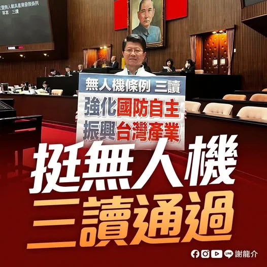

@hsiehlungchieh:公告》今晚龍介直播暫停一次…各位市民朋友我們下集見
Accounts
| 平台 | 帳號 | 已收錄貼文 | 最後更新 |
|---|---|---|---|
| 官網 | https://www.joo.com.tw/tel062268268/ | 0 | — |
| https://www.facebook.com/TEL062268268/ | 87 | 2026-08-28 13:19 | |
| https://www.instagram.com/hsiehlungchieh/ | 98 | 2026-08-28 14:16 | |
| Threads | https://www.threads.com/@hsiehlungchieh | 84 | 2026-08-28 18:26 |
| YouTube | https://www.youtube.com/channel/UCwmpCYMVf3j9D_-dToJxPNw | 85 | 2026-08-28 12:02 |
| LINE 官方帳號 | https://page.line.me/lcz1318b | 0 | — |
| TikTok | https://www.tiktok.com/@longuy1003 | 0 | — |
| 官網 | https://inewslong.com/ | 15 | 2026-08-27 19:17 |
Timeline
顯示 369 / 369 則
@hsiehlungchieh:公告》今晚龍介直播暫停一次…各位市民朋友我們下集見
@hsiehlungchieh:幾天前，咱台南安南區海佃路二段不幸發生了震驚全國的非法化學廢棄物大爆炸事故。現場因違法堆置具易燃禁水性的鋁、鎂金屬廢料與廢油，在深夜遭逢大雨時催化引發猛烈連環氣爆，巨大火球與蕈狀雲瞬間將方圓百公尺的社區變成如同戰地般的險境。 這場災害不僅造成15人受傷、數十輛救災車與民車損毀，受波及與受損的民宅更將近300戶，許多鄉親看著滿目瘡痍、窗框全毀的家園，在風雨中欲哭無淚。 面對鄉親們的無助，地方政府此時的角色至關重要。更令人憂心的是，涉嫌非法跨區傾倒廢棄物的王姓主嫌，早在今年六月就已潛逃越南遭到通緝。當無良業者人去樓空、逃往國外時，許多受災戶面臨殘破的家園，一邊要承擔驚人的修繕費用，一邊更深深恐懼未來將陷入「求償無門」的司法泥淖。這時候，城市的治理格局與主政者的魄力，就是災民唯一的指望。 面對如此重大的公安危機，謝龍介在此具體主張，並鄭重呼籲黃偉哲市長，應該引進並落實新竹市高翠路爆炸案模式：

民眾陳情：永康區勝華街37巷水溝有臭味會積水…永康區水溝班已處理回報
柯志恩勘災拋錨爬窗被酸 陳菁徽酸和卓榮泰不一樣「修車錢要自己付」 〈 柯志恩勘災拋錨爬窗被酸 陳菁徽酸和卓榮泰不一樣「修車錢要自己付」 〉本文來自於《 龍傳媒新聞 iNews Long 》。 豪雨狂炸高雄，淹出政治口水，國民黨高雄市長參選人柯志恩勘災時座車拋錨，被迫「爬車窗」脫困，遭綠營及側翼批評自導自演...

@hsiehlungchieh:立法院三讀法案行政院不副署…支持韓國瑜院長更硬氣一點提出矯正
立法院三讀法案行政院不副署…支持韓國瑜院長更硬氣一點提出矯正

無人機條例三讀！ 強化國防自主，振興台灣產業！ 今天立法院三讀通過《強化國防自主暨無人載具產業發展條例》（無人機條例）。 台灣要發展無人機產業，不能只靠政府一口氣下大單、拚採購數字，最後卻讓訂單集中少數廠商，甚至關鍵零組件、核心技術還得看別人臉色。 國民黨提出的6年2400億元版本，就是希望透過長期、穩定政策，把國防需求轉化成扶植台灣產業的力量，避免只衝短期採購，卻沒有留下技術與產能。 這次三讀有幾個重點： 👉 6年投入2400億元 原則每年400億元，透過年度預算逐年審議、接受國會監督。 👉國防需求與產業發展並進 軍用採購結合產業政策，讓國防需求帶動國內研發與製造。 👉建立台灣自己的供應鏈 從研發、製造、維修到測試，扶植國內廠商與中小企業，把產業根留在台灣。 龍介支持強化國防，但錢一定要花在刀口上。2400億元不能只買裝備，更要轉化成真正戰力、強化國防自主，也要成為台灣產業升級的機會。 把技術留在台灣、把產能留在台灣。國防更自主，產業更有力，台灣才會更安全。
昨天，台南市議員蔡宗豪針對台南水患提出幾個問題，龍介認為，黃偉哲市府真的要好好回答。 宗豪講得很實在，台南一淹水，市府的說法總是差不多：雨太大、面積大、預算少。但極端氣候不是今年才開始，短延時強降雨也不是第一次遇到。既然舊標準已經跟不上，治水標準和整體規畫就應該跟著更新。 宗豪也點出，2014至2026年，台南、高雄治水經費合計約占全國四分之一。既然這些年治水預算沒有少，就不能每逢淹水，就把問題推給「預算不夠」。 以中西區為例，雨水下水道整體規畫仍沿用2011年資料，已經15年沒有全面檢討。十多年來，都市開發、建築密度、降雨強度都變了，當年的排水規畫，還撐不撐得住今天的大雨？ 但這次台南淹水後，黃偉哲市長又喊著要更多治水經費。龍介要講，該替台南爭的，一毛都不能少；但不能每次淹水，就只有一句「預算不夠」。 把2006至2026年的治水特別預算補助攤開來看，這20年間，台南市拿了約484億元，全國最高；而北北基桃加上台中，差不多只有約400億元，還比不上一個台南市。 現在的問題不是台南有沒有拿到錢，而是：拿了這麼多資源預算後，治水成果到底在哪裡？ 但現在民進黨幹事長莊瑞雄又拿1982年至2013年的數字來說，北北基投入的治水預算約1649億元，台南、高雄只有約317億元，替中央解釋南部過去拿得比較少。 龍介就要問：現在台南淹的是2026年的水，治水不是歷史考古，怎麼可以把2014年之後的大筆治水預算全部切掉不談？ 2014年之後，中央陸續推動流域綜合治理、前瞻治水特別預算。光是台南，2014至2019年的流域綜合治理就獲得約97.12億元，後續前瞻治水又有約187.54億元，都是全國最多。 這些數字更說明，現在真正該檢討的，不是預算夠不夠，而是這些年台南拿到全國最多的治水預算，規畫有沒有跟上、錢有沒有花出效果。 龍介不是反對爭預算。該替台南爭的，一毛不能少；但錢拿到了，政府就要接受檢驗。錢花到哪裡、改善了什麼，為什麼有些地方還是一再淹水？這才是黃偉哲市府該給台南人的答案。 雨可以愈下愈大，治水標準就要跟著提高；城市一直往前走，治水思維不能還停在15年前。

卓榮泰說風涼話沒錢勘災…2016台南維冠大樓倒塌，張善政不分黨派挹注資源

卓榮泰說風涼話沒錢勘災…2016台南維冠大樓倒塌，張善政不分黨派挹注資源
@hsiehlungchieh:幾天前，咱台南安南區海佃路二段不幸發生了震驚全國的非法化學廢棄物大爆炸事故。現場因違法堆置具易燃禁水性的鋁、鎂金屬廢料與廢油，在深夜遭逢大雨時催化引發猛烈連環氣爆，巨大火球與蕈狀雲瞬間將方圓百公尺的社區變成如同戰地般的險境。 這場災害不僅造成15人受傷、數十輛救災車與民車損毀，受波及與受損的民宅更將近300戶，許多鄉親看著滿目瘡痍、窗框全毀的家園，在風雨中欲哭無淚。 面對鄉親們的無助，地方政府此時的角色至關重要。更令人憂心的是，涉嫌非法跨區傾倒廢棄物的王姓主嫌，早在今年六月就已潛逃越南遭到通緝。當無良業者人去樓空、逃往國外時，許多受災戶面臨殘破的家園，一邊要承擔驚人的修繕費用，一邊更深深恐懼未來將陷入「求償無門」的司法泥淖。這時候，城市的治理格局與主政者的魄力，就是災民唯一的指望。 面對如此重大的公安危機，謝龍介在此具體主張，並鄭重呼籲黃偉哲市長，應該引進並落實新竹市高翠路爆炸案模式：
幾天前，咱台南安南區海佃路二段不幸發生了震驚全國的非法化學廢棄物大爆炸事故。現場因違法堆置具易燃禁水性的鋁、鎂金屬廢料與廢油，在深夜遭逢大雨時催化引發猛烈連環氣爆，巨大火球與蕈狀雲瞬間將方圓百公尺的社區變成如同戰地般的險境。 這場災害不僅造成15人受傷、數十輛救災車與民車損毀，受波及與受損的民宅更將近300戶，許多鄉親看著滿目瘡痍、窗框全毀的家園，在風雨中欲哭無淚。 面對鄉親們的無助，地方政府此時的角色至關重要。更令人憂心的是，涉嫌非法跨區傾倒廢棄物的王姓主嫌，早在今年六月就已潛逃越南遭到通緝。當無良業者人去樓空、逃往國外時，許多受災戶面臨殘破的家園，一邊要承擔驚人的修繕費用，一邊更深深恐懼未來將陷入「求償無門」的司法泥淖。這時候，城市的治理格局與主政者的魄力，就是災民唯一的指望。 面對如此重大的公安危機，謝龍介在此具體主張，並鄭重呼籲黃偉哲市長，應該引進並落實新竹市高翠路爆炸案模式： 一、引進新竹「代償、代位求償」機制：比照新竹市政府在處理高翠路重大氣爆案時的魄力，台南市府應主動拉高救助層級，動用災害準備金全額墊付受災戶的房屋修繕與財產損失，讓市民不用在漫長的司法鑑定與兩手空空的通緝犯面前枯等，由「政府先扛，市民先安」！ 二、簽署債權讓與，市府統一法律追償：輔導受災住戶與車主簽署債權讓與契約，將損害賠償請求權轉讓給市府，由市府法制處整合專業律師團，統一代表市民與無良業者、共犯及背後的地主、財團打民事訴訟。由政府的公權力去對抗惡質廠商，免去百姓孤身奔波法院的折磨。 三、雷厲風行發動假扣押：市府必須第一時間啟動司法保全程序，直接凍結、假扣押涉案關係人、共犯與楊姓仲介等人的財產，徹底防範任何脫產行為，百分之百捍衛公帑與台南市民的應有權益。 四、地方稅務主動從寬減免：由台南市稅務局主動對受災區域內的受損房屋、土地及汽機車，採取「從寬、從速、從簡」原則，直接免除或停徵地方稅，給予災民最實質的喘息空間。 苦民所苦，治理城市不能只有一成不變的行政官僚思維。當市民在面臨家園破碎、未知風險的巨大衝擊時，政府就必須挺身而出，做百姓最堅強的靠山！ 龍介期待黃偉哲市長及市府團隊能展現大氣魄，立刻提升台南市的重大災害救助與求償機制，讓台南市民真正感受到這座城市給予的溫暖與承擔！你若不做，我年底當選，一定做！

@hsiehlungchieh:民眾陳情：永康區勝華街37巷水溝有臭味會積水…永康區水溝班已處理回報
南台灣大淹水！高雄市議員怒批民進黨執政高雄淹水始終無法改善 〈 南台灣大淹水！高雄市議員怒批民進黨執政高雄淹水始終無法改善 〉本文來自於《 龍傳媒新聞 iNews Long 》。 颱風還沒來，南部已經連續淹水好幾天。高雄市議員陳美雅，直說高雄現在一下大雨，民眾就人心惶惶，晚上不敢睡覺..
立法院三讀法案行政院不副署…支持韓國瑜院長更硬氣一點提出矯正
@hsiehlungchieh:無人機條例三讀！ 強化國防自主，振興台灣產業！ 今天立法院三讀通過《強化國防自主暨無人載具產業發展條例》（無人機條例）。 台灣要發展無人機產業，不能只靠政府一口氣下大單、拚採購數字，最後卻讓訂單集中少數廠商，甚至關鍵零組件、核心技術還得看別人臉色。 國民黨提出的6年2400億元版本，就是希望透過長期、穩定政策，把國防需求轉化成扶植台灣產業的力量，避免只衝短期採購，卻沒有留下技術與產能。 這次三讀有幾個重點： 👉 6年投入2400億元 原則每年400億元，透過年度預算逐年審議、接受國會監督。 👉國防需求與產業發展並進 軍用採購結合產業政策，讓國防需求帶動國內研發與製造。 👉建立台灣自己的供應鏈 從研發、製造、維修到測試，扶植國內廠商與中小企業，把產業根留在台灣。 龍介支持強化國防，但錢一定要花在刀口上。2400億元不能只買裝備，更要轉化成真正戰力、強化國防自主，也要成為台灣產業升級的機會。 把技術留在台灣、把產能留在台灣。國防更自主，產業更有力，台灣才會更安全。
昨天，台南市議員蔡宗豪針對台南水患提出幾個問題，龍介認為，黃偉哲市府真的要好好回答。 宗豪講得很實在，台南一淹水，市府的說法總是差不多：雨太大、面積大、預算少。但極端氣候不是今年才開始，短延時強降雨也不是第一次遇到。既然舊標準已經跟不上，治水標準和整體規畫就應該跟著更新。 宗豪也點出，2014至2026年，台南、高雄治水經費合計約占全國四分之一。既然這些年治水預算沒有少，就不能每逢淹水，就把問題推給「預算不夠」。 以中西區為例，雨水下水道整體規畫仍沿用2011年資料，已經15年沒有全面檢討。十多年來，都市開發、建築密度、降雨強度都變了，當年的排水規畫，還撐不撐得住今天的大雨？ 但這次台南淹水後，黃偉哲市長又喊著要更多治水經費。龍介要講，該替台南爭的，一毛都不能少；但不能每次淹水，就只有一句「預算不夠」。 把2006至2026年的治水特別預算補助攤開來看，這20年間，台南市拿了約484億元，全國最高；而北北基桃加上台中，差不多只有約400億元，還比不上一個台南市。 現在的問題不是台南有沒有拿到錢，而是：拿了這麼多資源預算後，治水成果到底在哪裡？ 但現在民進黨幹事長莊瑞雄又拿1982年至2013年的數字來說，北北基投入的治水預算約1649億元，台南、高雄只有約317億元，替中央解釋南部過去拿得比較少。
Responding to User Complaints: Air Raid Drill Mobile Network Outage... Can Telecom Companies Prov...

卓榮泰說風涼話沒錢勘災…2016台南維冠大樓倒塌，張善政不分黨派挹注資源

【本集介紹】 📌 龍介開箱網友北真實業寄來的茶 📌 台南大淹水「三天淹四次」..水溝到底有沒有清？ 📌 勘災也扯預算...藍白砍預算卓榮泰沒辦法南下勘災？ 📌 回覆網友陳情：南科裡限速不合理... 📌 台南市安南區爆炸案3人羈押禁見 📌 賴清德台南勘災稱「淹水面積少99%請少批評」... #龍介直播 #謝龍介 #龍介仙 #台南 #台語
幾天前，咱台南安南區海佃路二段不幸發生了震驚全國的非法化學廢棄物大爆炸事故。現場因違法堆置具易燃禁水性的鋁、鎂金屬廢料與廢油，在深夜遭逢大雨時催化引發猛烈連環氣爆，巨大火球與蕈狀雲瞬間將方圓百公尺的社區變成如同戰地般的險境。 這場災害不僅造成15人受傷、數十輛救災車與民車損毀，受波及與受損的民宅更將近300戶，許多鄉親看著滿目瘡痍、窗框全毀的家園，在風雨中欲哭無淚。 面對鄉親們的無助，地方政府此時的角色至關重要。更令人憂心的是，涉嫌非法跨區傾倒廢棄物的王姓主嫌，早在今年六月就已潛逃越南遭到通緝。當無良業者人去樓空、逃往國外時，許多受災戶面臨殘破的家園，一邊要承擔驚人的修繕費用，一邊更深深恐懼未來將陷入「求償無門」的司法泥淖。這時候，城市的治理格局與主政者的魄力，就是災民唯一的指望。 面對如此重大的公安危機，謝龍介在此具體主張，並鄭重呼籲黃偉哲市長，應該引進並落實新竹市高翠路爆炸案模式：
Public Complaint: Foul Odor and Stagnant Water in the Drain on Lane 37, Shenghua Street, Yongkang...
民眾陳情：永康區勝華街37巷水溝有臭味會積水…永康區水溝班已處理回報
賴清德喊不要淹水就責備中南部治水的錢花到哪 葉向媛：台北不是親生的 〈 賴清德喊不要淹水就責備中南部治水的錢花到哪 葉向媛：台北不是親生的 〉本文來自於《 龍傳媒新聞 iNews Long 》。 南部淹水災情慘重，賴清德總統到高雄視察治水工程時抱怨，淹水就責備中南部治水的錢花到哪裡去是不公平的...
立法院三讀法案行政院不副署…支持韓國瑜院長更硬氣一點提出矯正
無人機條例三讀！ 強化國防自主，振興台灣產業！ 今天立法院三讀通過《強化國防自主暨無人載具產業發展條例》（無人機條例）。 台灣要發展無人機產業，不能只靠政府一口氣下大單、拚採購數字，最後卻讓訂單集中少數廠商，甚至關鍵零組件、核心技術還得看別人臉色。 國民黨提出的6年2400億元版本，就是希望透過長期、穩定政策，把國防需求轉化成扶植台灣產業的力量，避免只衝短期採購，卻沒有留下技術與產能。 這次三讀有幾個重點： 👉 6年投入2400億元 原則每年400億元，透過年度預算逐年審議、接受國會監督。 👉國防需求與產業發展並進 軍用採購結合產業政策，讓國防需求帶動國內研發與製造。 👉建立台灣自己的供應鏈 從研發、製造、維修到測試，扶植國內廠商與中小企業，把產業根留在台灣。 龍介支持強化國防，但錢一定要花在刀口上。2400億元不能只買裝備，更要轉化成真正戰力、強化國防自主，也要成為台灣產業升級的機會。 把技術留在台灣、把產能留在台灣。國防更自主，產業更有力，台灣才會更安全。
@hsiehlungchieh:昨天，台南市議員蔡宗豪針對台南水患提出幾個問題，龍介認為，黃偉哲市府真的要好好回答。 宗豪講得很實在，台南一淹水，市府的說法總是差不多：雨太大、面積大、預算少。但極端氣候不是今年才開始，短延時強降雨也不是第一次遇到。既然舊標準已經跟不上，治水標準和整體規畫就應該跟著更新。 宗豪也點出，2014至2026年，台南、高雄治水經費合計約占全國四分之一。既然這些年治水預算沒有少，就不能每逢淹水，就把問題推給「預算不夠」。 以中西區為例，雨水下水道整體規畫仍沿用2011年資料，已經15年沒有全面檢討。十多年來，都市開發、建築密度、降雨強度都變了，當年的排水規畫，還撐不撐得住今天的大雨？ 但這次台南淹水後，黃偉哲市長又喊著要更多治水經費。龍介要講，該替台南爭的，一毛都不能少；但不能每次淹水，就只有一句「預算不夠」。 把2006至2026年的治水特別預算補助攤開來看，這20年間，台南市拿了約484億元，全國最高；而北北基桃加上台中，差不多只有約400億元，還比不上一個台南市。 現在的問題不是台南有沒有拿到錢，而是：拿了這麼多資源預算後，治水成果到底在哪裡？
回覆網友陳情：防空演習行動網路斷網...電信公司是否能補償？NCC回覆了

@hsiehlungchieh:卓榮泰說風涼話沒錢勘災…2016台南維冠大樓倒塌，張善政不分黨派挹注資源
@hsiehlungchieh:看到新加坡為了提高出生率，再度大手筆加碼催生政策，龍介第一個想法就是：好的政策，就應該見賢思齊。 新加坡政府規劃，未來每名孩子從出生一路到17歲，家庭可獲得近7萬新加坡元、折合新台幣將近175萬元的支持。這說明一件事：少子化不是發一次紅包就能解決，而是要從生育、育兒到居住，一路替年輕家庭減輕負擔。 台灣的目前補助雖然還比不上新加坡，但該做的還是要做。龍介在台南提出幾項育兒政策，就是要把育兒環境顧得更好，從生、養到住，實實在在替年輕家庭減輕壓力： 👉0到15歲，每月領5000元，龍介再加碼： 龍介先前提出，台南0到15歲孩子每月加碼5000元，總額最高96萬元。中央後來跟進延長到18歲，但6到18歲每月有2500元要存進孩子帳戶。 龍介主張，台南再補2500元，讓年輕爸媽每個月真正領滿5000元！ 👉最強生育津貼： 第一胎3萬元，第二胎以上每胎5萬元。 👉婚育宅比例直接翻倍到40%： 把更多社宅優先留給台南有婚育需求的年輕人，先幫大家解決「住」的問題。 👉三胎家庭租金折抵購屋金： 育有三胎的夫妻優先入住婚育宅，未來若購買政府社宅、公宅，過去繳的租金還能折抵購屋金。